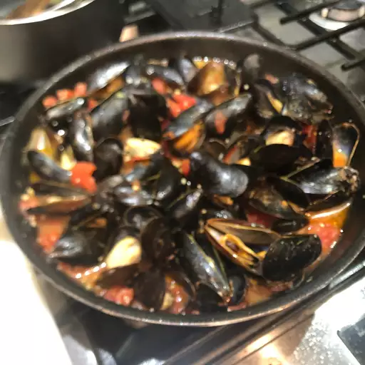

Patti's Mussels a la Mariniere

This dish is reminiscent of dining in an outdoor cafe in the south of France. Serve with crusty bread, and a nice chilled glass of white wine. This exact recipe can also be used for clams.
Ingredients
- 50 fresh mussels, scrubbed and debearded
- 2 tablespoons extra virgin olive oil
- 5 cloves garlic, minced
- 1 cup white wine
- 2 tablespoons margarine or butter
- 3 green onions, chopped
- 1 bunch fresh parsley, chopped
- 3 roma (plum) tomatoes, chopped
- salt and pepper to taste
- Place mussels in a large bowl with cold water to cover. Let them soak for about 20 minutes to remove any dirt or sand.
- Heat olive oil in a large stockpot over medium-low heat. Add garlic, and saute for one minute, but do not brown. Add the chopped green onion and tomatoes, and cook until almost tender. Pour in the white wine, and stir in the parsley and butter. Bring to a boil, and allow to boil until the liquid has reduced by half, about 15 minutes. Season with salt and pepper to taste.
- Add the mussels to the pot, cover and allow to cook until the shells are opened, about 10 minutes. Transfer the mussels and sauce to a large serving bowl, discarding any unopened shells. Bon appetit!